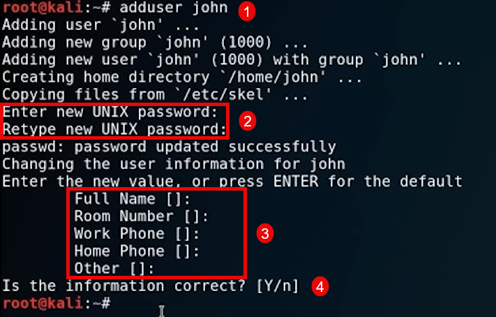

Add a new user:
adduser john

some time when you are doing Penetration testing, you are going to have access to the etc/passwd file, because it doesn't provide the password. it used to. but
passwords are now located in the shadow file.
open the etc/passwd file. this file show you all the users
cat /etc/passwd

open the etc/shadow file. where the passwords of the users are store
cat /etc/shadow

switching users
su john

try to change root password with elevated permission. will fail, because John is a base user.
sudo passwd root
we will encounter that a lot of time in penetration testing, where if we get in, we'll get something called Lower priviledge. And will get an account like john,
and we are going to try to escalate into root. but we cannot just do it. The chance of having a john in a sudoers file, is just not that high.
if you want a user other that root to have access to file permission, you need to have them in the sudoers file